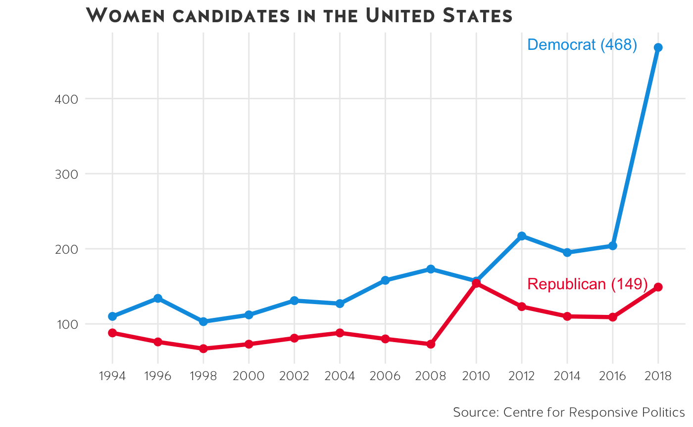

vignettes/political_parties.Rmd
political_parties.RmdSometimes you want to colour points or lines by political parties i.e. Republicans and Democrats or ALP/Coalition/Greens. To make this easy to do, I have stored party information in ussc_colours. To access the colours as a vector, run ussc_pal$auspol or ussc_pal$uspol. If you want to use the colours in a ggplot2 object, simply create your graph and append scale_colour_ussc("auspol") or scale_fill_ussc("auspol") to the object.
label <- read.csv("~/dropboxsydneyuni/midterms_ussc/midterms-analysis-github/women_candidates/data/candidates_midterms.csv")%>%
filter(Cycle == "2018")
read.csv("~/dropboxsydneyuni/midterms_ussc/midterms-analysis-github/women_candidates/data/candidates_midterms.csv") %>%
ggplot() +
geom_line(aes(Cycle, Female.Candidates, colour = party), size = 1.5) +
geom_point(aes(Cycle, Female.Candidates, colour = party), size = 2.5) +
theme_ussc() +
directlabels::geom_dl(
data = label, aes(Cycle, Female.Candidates,
label = paste0(party, " (", Female.Candidates, ")"),
colour = party
),
method = list(directlabels::dl.trans(x = x - 3.5, y = y + .1),
"last.points",
cex = 1
)
) +
scale_colour_ussc("uspol") +
theme(
legend.position = "none",
panel.grid.minor = element_blank()
) +
scale_x_continuous(breaks = seq(1994, 2018, 2)) +
labs(
title = "Women candidates in the United States",
y = "", colour = "", x = "",
caption = "Source: Centre for Responsive Politics"
)